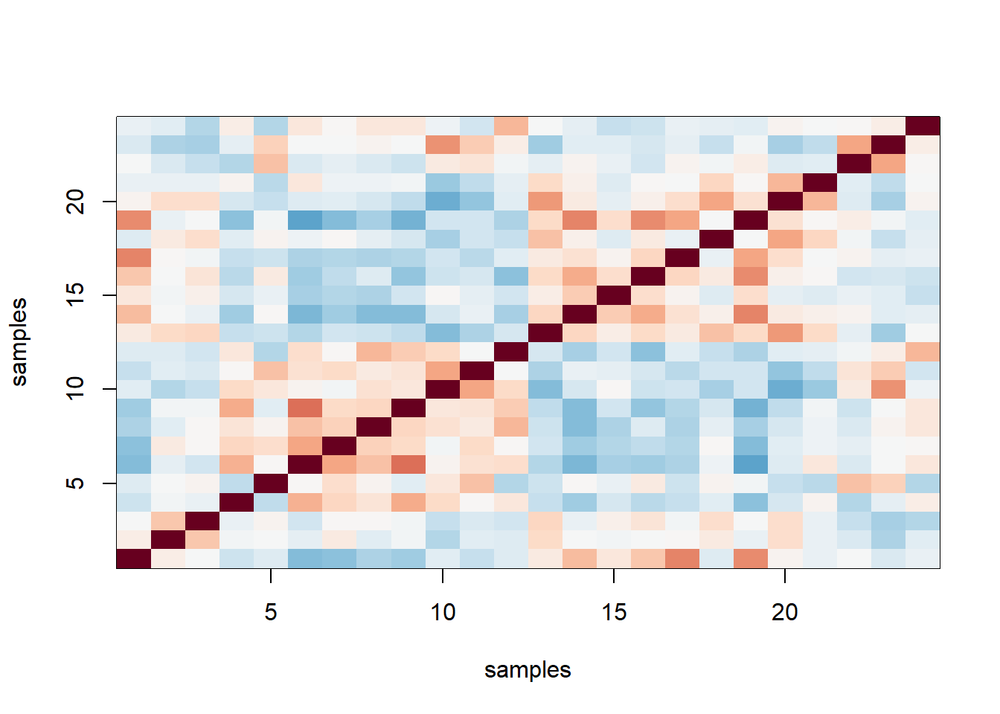

Chapter 10 Batch Effects
Note: I have rephrased some parts of the questions for clarity. These changes are bolded. Due to the random numbers, the exact values of the answers, despite the same seeds, might differ. So please be mindful of that.
First, upload necessary package(s).
library(dplyr) # uplaods the function filter() and %>%
library(rafalib) # important for plotting with base R
library(genefilter) # rowttests
library(Biobase) ##available from Bioconductor
library(genefilter)
library(GSE5859) ##available from github
data(GSE5859)
library(GSE5859Subset) # subset of gene expression data
library(tissuesGeneExpression)
data(tissuesGeneExpression)
library(qvalue)10.3 Exercises
Load the admissions data from the dagdata package (which is available from the genomicsclass repository):
Familiarize yourself with this table: admissions
Question 1
Lets compute the proportion of men who were accepted:
index = which(admissions$Gender==1)
accepted= sum(admissions$Number[index] * admissions$Percent[index]/100)
applied = sum(admissions$Number[index])
accepted/applied## [1] 0.4451951What is the proportion of women that were accepted?
index <- admissions$Gender == 1
men <- admissions[index,]
women <- admissions[!index,]
menYes <- sum(men$Percent/100 * men$Number)
menNo <- sum((1 - men$Percent/100) * men$Number)
womenYes <- sum(women$Percent/100 * women$Number)
womenNo <- sum((1-women$Percent/100) * women$Number)
tab <- matrix(c(menYes,womenYes,menNo,womenNo),2,2)
print(womenYes/(womenYes+womenNo))## [1] 0.3033351Question 2
Now that we have observed different acceptance rates between genders, test for the significance of this result. If you perform an independence test, what is the p-value?
## [1] 9.139492e-22Question 3
We can quantify how hard a major is by using the percent of students that were accepted. Compute the percent that were accepted (regardless of gender) to each major and call this vector H. Which is the hardest major?
admissions1 <- admissions %>% mutate(accepted = Number * Percent/100)
admissions2 <- cbind(admissions1[1:6,c(1,2,5)], admissions1[7:12,c(2,5)])
colnames(admissions2) <- c('major','number_m','accepted_m',
'number_f', 'accepted_f')
admission3 <- admissions2 %>% group_by(major) %>%
transmute(total_number= number_m+number_f,
total_accepted= accepted_m + accepted_f,
proportion = total_accepted/total_number)
H <- admission3 %>% dplyr::select(major,proportion)
H## # A tibble: 6 x 2
## # Groups: major [6]
## major proportion
## <fct> <dbl>
## 1 A 0.643
## 2 B 0.632
## 3 C 0.351
## 4 D 0.339
## 5 E 0.253
## 6 F 0.0648Major F is the hardest major.
Question 4
What proportion is accepted for this major?
## # A tibble: 1 x 2
## # Groups: major [1]
## major proportion
## <fct> <dbl>
## 1 F 0.0648Question 5
For men, what is the correlation between the number of applications across majors and H?
## cor
## 0.7647567Question 6
For women, what is the correlation between the number of applications across majors and H?
## cor
## -0.6743393Question 7
Given the answers to the above, which best explains the differences in admission percentages when we combine majors?
The answer is C: There is confounding between gender and preference for hard majors: females are more likely to apply to harder majors.
10.6 Exercises
Familiarize yourself with the sampleInfo table. Note that some samples were processed at different times. This is an extraneous variable and should not affect the values in geneExpression. However, as we have seen in previous analyses, it does appear to have an effect so we will explore this here. You can extract the year from each date like this:
Note that ethnic group and year is almost perfectly confounded:
##
## year ASN CEU HAN
## 02 0 32 0
## 03 0 54 0
## 04 0 13 0
## 05 80 3 0
## 06 2 0 24Question 1
For how many of these years do we have more than one ethnicity represented?
##
## year ASN CEU HAN
## 02 0 32 0
## 03 0 54 0
## 04 0 13 0
## 05 80 3 0
## 06 2 0 24Two of the years have more than one ethnicity represented.
Question 2
Repeat the above exercise, but now, instead of year, consider the month as well. Specifically, instead of the year variable defined above use:
For what proportion of these month.year values do we have more than one ethnicity represented?
month.year = format(sampleInfo$date,"%m%y")
tab <- table(month.year, sampleInfo$ethnicity)
res <- vector('double', nrow(tab))
for (i in seq_along(res)) {
res[[i]] <- length(unique(tab[i,]))
}
mean(res==3)## [1] 0.04761905Question 3
Perform a t-test (use rowttests) comparing CEU samples processed in 2002 to those processed in 2003. Then use the qvalue package to obtain q-values for each gene. How many genes have q-values < 0.05?
eth <- sampleInfo$ethnicity
ind <- which(eth == 'CEU' & year %in% c('02','03'))
pvals <- rowttests(geneExpression[,ind], factor(year[ind]))$p.value
qvals <- qvalue(pvals)$qvalues
sum(qvals < 0.05)## [1] 4308Question 5
Now perform a t-test (use rowttests) comparing CEU samples processed in 2003 to those processed in 2004. Then use the qvalue package to obtain q-values for each gene. How many genes have q-values less than 0.05?
ind <- which(eth == 'CEU' & year %in% c('03','04'))
pvals <- rowttests(geneExpression[,ind], factor(year[ind]))$p.value
qvals <- qvalue(pvals)$qvalues
sum(qvals < 0.05)## [1] 2463Question 6
Now we are going to compare ethnicities as was done in the original publication in which these data were first presented. Use the qvalue function to compare the ASN population to the CEU population. Once again, use the qvalue function to obtain q-values. How many genes have q-values < 0.05?
ind <- which(eth %in% c('ASN','CEU'))
pvals <- rowttests(geneExpression[,ind], factor(eth[ind]))$p.value
qvals <- qvalue(pvals)$qvalues
sum(qvals < 0.05)## [1] 7217Question 7
Over 80% of genes are called differentially expressed between ethnic groups. However, due to the confounding with processing date, we need to confirm these differences are actually due to ethnicity.This will not be easy due to the almost perfect confounding. However, above we noted that two groups were represented in 2005. Just like we stratified by majors to remove the major effect in our admissions example, here we can stratify by year and perform a t-test comparing ASN and CEU, but only for samples processed in 2005. How many genes have q-values < 0.05?
ind <- which(eth %in% c('ASN','CEU')& year == '05')
pvals <- rowttests(geneExpression[,ind], factor(eth[ind]))$p.value
qvals <- qvalue(pvals)$qvalues
sum(qvals < 0.05)## [1] 560##
## ASN CEU HAN
## 80 3 0Question 8
To provide a more balanced comparison, we repeat the analysis, but now taking 3 random CEU samples from 2002. Repeat the analysis above, but comparing the ASN from 2005 to three random CEU samples from 2002. Set the seed at 3,
set.seed(3). How many genes have q-values < 0.05?
set.seed(3)
ind_ceu <- which(eth =='CEU' & year == '02')
ind_ceu2 <- sample(ind_ceu,3)
ind_asn <- which(eth == 'ASN' & year =='05')
ind <- c(ind_ceu2,ind_asn)
pvals <- rowttests(geneExpression[,ind], factor(eth[ind]))$p.value
qvals <- qvalue(pvals)$qvalues
sum(qvals < 0.05)## [1] 369510.9 Exercises
library(GSE5859Subset)
data(GSE5859Subset)
sex = sampleInfo$group
month = factor( format(sampleInfo$date,"%m"))
table( sampleInfo$group, month)## month
## 06 10
## 0 9 3
## 1 3 9Question 1
Using the functions rowttests and qvalue compare the two groups. Because this is a smaller dataset which decreases our power, we will use the more lenient FDR
cut-off of 10%. How many gene have q-values less than 0.1?
## [1] 59Question 2
Note that sampleInfo$group here presents males and females. Thus, we expect differences to be in on chrY and, for genes that escape inactivation, chrX. We do not expect many autosomal genes to be different between males and females. This gives us an opportunity to evaluate false and true positives with experimental data. For example, we evaluate results using the proportion genes of the list that
are on chrX or chrY.
For the list calculated in Question 1, what proportion of this list is on chrX or chrY?
ind_qval <- (qvals<0.1) # qvalue index for significance
chr <- geneAnnotation$CHR
ind_xy <- (chr[ind_qval] %in% c('chrX','chrY'))
sum(ind_xy)/sum(ind_qval)## [1] 0.3389831Question 3
We can also check how many of the chromosomes X and Y genes we detected as different. How many are on Y?
chr_ind_xy <- which(chr[ind_qval] %in% c('chrX','chrY'))
length(chr[ind_qval][chr_ind_xy] == 'chrY')## [1] 20Question 4
Now for the autosomal genes (not on chrX and chrY) for which q-value < 0.1, perform a t-test comparing samples processed in June to those processed in October. What proportion of these have p-values <0.05? Hint: Be careful about indexing.
pvals <- rowttests(geneExpression, factor(sex))$p.val
qvals <- qvalue(pvals)$qvalues
ind <- which(qvals < 0.1)
gene_dat_non_xy <- geneExpression[ind[!chr[ind] %in% c('chrX','chrY')],]
pvals <- rowttests(gene_dat_non_xy, factor(month))$p.val
mean(pvals < 0.05)## [1] 0.8717949Question 5
The above result shows that the great majority of the autosomal genes show differences due to processing data. This provides further evidence that confounding is resulting in false positives. So we are going to try to model the month effect to better estimate the sex effect. We are going to use a linear model. Which of the following creates the appropriate design matrix?
## (Intercept) sex batch10
## 1 1 1 0
## 2 1 1 0
## 3 1 1 0
## 4 1 1 1
## 5 1 1 1
## 6 1 1 1
## 7 1 1 1
## 8 1 1 1
## 9 1 1 1
## 10 1 1 1
## 11 1 1 1
## 12 1 1 1
## 13 1 0 0
## 14 1 0 0
## 15 1 0 0
## 16 1 0 0
## 17 1 0 0
## 18 1 0 0
## 19 1 0 0
## 20 1 0 0
## 21 1 0 0
## 22 1 0 1
## 23 1 0 1
## 24 1 0 1
## attr(,"assign")
## [1] 0 1 2
## attr(,"contrasts")
## attr(,"contrasts")$batch
## [1] "contr.treatment"Question 6
Now use the X defined above, to fit a regression model using lm for each gene. You can obtain p-values for estimated parameters using summary. Here is an example
## Estimate Std. Error t value Pr(>|t|)
## (Intercept) 9.33316105 0.06098459 153.0412990 1.714250e-33
## Xsex -0.04281057 0.09220004 -0.4643227 6.471942e-01
## Xmonth10 0.25352885 0.09220004 2.7497696 1.200505e-02How many of the q-values for the group comparison are now <0.1? Note the big drop from what we obtained without the correction (Question 1).
X <- model.matrix(~sex+month)
res <- t(sapply(1:nrow(geneExpression), function(i) {
fit <- lm(geneExpression[i,]~X)
return(summary(fit)$coef[2,c(1,4)])
}))
res <- data.frame(res)
names(res) <- c('est','pvals')
qvals <- qvalue(res$pvals)$qvalues
sum(qvals <0.1)## [1] 17Question 7
With this new list, what proportion of these are chrX and chrY? Notice the big improvement.
ind_qval <- (qvals<0.1)
chr <- geneAnnotation$CHR
ind_xy <- (chr[ind_qval] %in% c('chrX','chrY')) # index for chrX and chrY
sum(ind_xy)/sum(ind_qval)## [1] 0.8823529Question 9
Now from the linear model above, extract the p-values related to the coeffcient representing the October versus June differences using the same linear model. How many of the q-values for the month comparison are now <0.1? This approach is basically the approach implemented by Combat.
X <- model.matrix(~sex+month)
res <- t(sapply(1:nrow(geneExpression), function(i) {
fit <- lm(geneExpression[i,]~X)
return(summary(fit)$coef[3,c(1,4)])
}))
res <- data.frame(res)
names(res) <- c('est','pvals')
qvals <- qvalue(res$pvals)$qvalues
sum(qvals <0.1)## [1] 317010.11 Exercises
10.0.1 Question 1
Suppose you want to make an MA-plot of the first two samples y = geneExpression[,1:2]. Which of the following projections gives us the projection of y so that column 2 versus column 1 is an MA plot?
\[ \, A. y\begin{pmatrix} 1/\sqrt{2} & 1/\sqrt{2} \\ 1/\sqrt{2} & -1/\sqrt{2} \\ \end{pmatrix} \\ B. y\begin{pmatrix} 1 & 1 \\ 1 & -1 \\ \end{pmatrix} \\ C. \begin{pmatrix} 1 & 1 \\ 1 & -1 \\ \end{pmatrix} y \\ D. \begin{pmatrix} 1 & 1 \\ 1 & -1 \\ \end{pmatrix} y^T \]
To be honest, according to my attempt, theres no correct answer among the provided answer choices. Please let me know if I am incorrect (through github or email); I will make sure to put your name in one of the contributors to this project. Heres my attempt.
y = geneExpression[,1:2]
avg = (y[,1]+y[,2])/2 # average
diff = z2 = (y[,1]-y[,2]) # difference
z = cbind(avg,diff)
head(z) # the actual values of average and difference## avg diff
## 1007_s_at 6.472712 0.14248432
## 1053_at 7.405128 0.28316044
## 117_at 5.226584 0.35207594
## 121_at 7.800149 0.18478972
## 1255_g_at 3.232791 0.01997527
## 1294_at 7.311012 0.44148316# Now let's try each answer and compare to head(z).
# answer A - avg = sqrt(2) x z[,1], diff = z[,2] / sqrt(2)
head(y %*% matrix(c(1,1,1,-1),2,2)) ## [,1] [,2]
## 1007_s_at 12.945424 0.14248432
## 1053_at 14.810255 0.28316044
## 117_at 10.453168 0.35207594
## 121_at 15.600297 0.18478972
## 1255_g_at 6.465583 0.01997527
## 1294_at 14.622024 0.44148316## [,1] [,2]
## 1007_s_at 12.945424 0.14248432
## 1053_at 14.810255 0.28316044
## 117_at 10.453168 0.35207594
## 121_at 15.600297 0.18478972
## 1255_g_at 6.465583 0.01997527
## 1294_at 14.622024 0.44148316# answer C - non-comfortable array, can't multiply
# answer D - avg = 2 x z[1,2], diff = z[,2]
head(t(matrix(c(1,1,1,-1),2,2) %*% t(y)))## [,1] [,2]
## 1007_s_at 12.945424 0.14248432
## 1053_at 14.810255 0.28316044
## 117_at 10.453168 0.35207594
## 121_at 15.600297 0.18478972
## 1255_g_at 6.465583 0.01997527
## 1294_at 14.622024 0.44148316So none of the choices are equal to head(z). Instead here is my answer that transforms y correctly.
## [,1] [,2]
## 1007_s_at 6.472712 0.14248432
## 1053_at 7.405128 0.28316044
## 117_at 5.226584 0.35207594
## 121_at 7.800149 0.18478972
## 1255_g_at 3.232791 0.01997527
## 1294_at 7.311012 0.44148316## [1] FALSETherefore, my answer is:
\[ y\begin{pmatrix} 1/2 & 1 \\ 1/2 & -1 \\ \end{pmatrix} \\ \]
10.0.2 Question 2
Say \(Y\) is \(M\)x\(N\) in the \(SVD Y = UDV^T\) which of the following is not correct?
Answer is C: \(D\) are the coordinates of the projection \(U^TY\).
Question 3
Define
Compute and plot an image of the correlation for each sample. Make two image plots of these correlations. In the first one, plot the correlation as image. In the second, order the samples by date and then plot an image of the correlation. The only difference in these plots is the order in which the samples are plotted. Based on these plots, which of the following would you say is true?
n <- ncol(y)
cors=cor(y)
cols=colorRampPalette(rev(brewer.pal(11,"RdBu")))(100)
image(1:n, 1:n, cors, col=cols, xlab = 'samples', ylab = 'samples',
zlim = c(-1,1)) # correlation as image
ind <- order(sampleInfo$date)
y2 <- y[,ind]
n2 <- ncol(y)
cors2=cor(y2)
image(1:n2, 1:n2, cors2, col=cols, xlab = 'samples', ylab = 'samples',
zlim = c(-1,1)) # correlation as image after sorting the date. some samples are more correlated within a span of date than others.
The answer is D: The fact that in the plot ordered by month we see two groups mainly driven by month, and within these we see subgroups driven by date, seems to suggest date more than month per se are the hidden factors.
Question 4
Based on the correlation plots above, we could argue that there are at least two hidden factors. Using PCA estimate these two factors. Specifically, apply the svd to y and use the first two PCs as estimates. Which command gives us these estimates?
## [,1] [,2]
## [1,] -0.232970658 -0.01693543
## [2,] -0.034229085 -0.13955710
## [3,] -0.083264418 -0.19476886
## [4,] 0.306299241 -0.07357253
## [5,] 0.003861145 0.17918969
## [6,] 0.353302375 -0.09079626The answer is B: pcs = svd(y)$v[,1:2].
Question 5
Plot each of the estimated factors ordered by the date. Use color to denote month. The first factor is clearly related to date. Which of the following appears to be most different according to this factor?
To be honest, I do not know what the question is actually asking for. I also think this is one of the most difficult questions in the book. It can possibly ask either of these two things: 1) which date appears to be most different in the function of PC1? 2) which dates are most different from each other in the function of PC1? To answer both of these questions, we need to visualize each date in a plot where the x-axis is PC1 and y-axis is PC2. My code below also displays the range of PC1 for each date blue.
s <- svd(y)
ind_0610 <- which(sampleInfo$date == '2005-06-10')
ind_0623 <- which(sampleInfo$date == '2005-06-23')
ind_0627 <- which(sampleInfo$date == '2005-06-27')
ind_1007 <- which(sampleInfo$date == '2005-10-07')
ind_1028 <- which(sampleInfo$date == '2005-10-28')
index_list <- list(ind_0610, ind_0623, ind_0627, ind_1007, ind_1028)
res_range <- vector('double',length(index_list))
mypar(2,3)
for (i in seq_along(index_list)) {
plot(s$v[,1][index_list[[i]]], s$v[,2][index_list[[i]]],
xlab = 'PC1', ylab = 'PC2', xlim = c(-0.4,.4),
ylim = c(-0.4,0.6),
main = paste0(unique(sampleInfo$date[index_list[[i]]])))
res_range[[i]] <- max(s$v[,1][index_list[[i]]])-min(s$v[,1][index_list[[i]]])
text(0.1,0.1, signif(res_range[[i]],2), pos=2,col = 'blue')
}The plot shows data that are spread in the function of PC1. The blue numbers show the range of PC1 that each dates data span. Oct 7th has a highest difference in the function of PC1, with a range of 0.38. However, the range of Oct 28th is merely 0.075. Also they do not seem to be much different from each other, primarily because Oct 7th covers a wide range of PC1. This rules out answer choice B.
June 10th and 23th seem to be not much different from each other. Also, the range of June 10th is 0 because it only has one point. This rules out answer choice C. Answer D is eliminated because there is no June 15th.
Answer choice A seems to be most appropriate because both June 23th and 27th data seem to be spread in the function of PC1. Also they do seem to be quite different from each other in terms of their location in the PC1 x-axis.
Question 6
Use the svd function to obtain the principal components (PCs) for our detrended gene expression data y. How many PCs explain more than 10% of the variability?
## [1] 2Question 7
Which PC most correlates (negative or positive correlation) with month?
res <- vector('double',ncol(s$v))
month <- format(sampleInfo$date,"%m")
month <- as.numeric(month)
for (i in seq_along(res)) {
res[[i]] <- cor(month, s$v[,i])
}
ind <- which(abs(res)==max(abs(res)))
ind## [1] 1Question 9
Which PC most correlates (negative or positive correlation) with sex?
res <- vector('double',ncol(s$v))
sex <- sampleInfo$group
for (i in seq_along(res)) {
res[[i]] <- cor(sex, s$v[,i])
}
ind <- which(abs(res)==max(abs(res)))
ind## [1] 1Question 11
Now instead of using month, which we have shown does not quite describe the batch (Question 5), add the two estimated factors s$v[,1:2] to the linear model we used
above. Apply this model to each gene and compute q-values for the sex difference. How many q-values < 0.1 for the sex comparison?
y = geneExpression - rowMeans(geneExpression)
s <- svd(y)
X <- model.matrix(~sex + s$v[,1:2])
res <- sapply(1:nrow(y), function(i) {
fit <- lm(y[i,]~X)
return(summary(fit)$coef[2,4])
})
qvals <- qvalue(res)$qvalues
sum(qvals < 0.1)## [1] 14Question 12
What proportion of the genes are on chromosomes X and Y?
## [1] 110.13 Exercises
## Warning: package 'sva' was built under R version 3.5.2## Loading required package: mgcv## Loading required package: nlme##
## Attaching package: 'nlme'## The following object is masked from 'package:HistData':
##
## Wheat## The following object is masked from 'package:dplyr':
##
## collapse## This is mgcv 1.8-24. For overview type 'help("mgcv-package")'.## Loading required package: BiocParallelQuestion 1
In a previous section we estimated factors using PCA, but we noted that the first factor was correlated with our outcome of interest:
## [1] 0.6236858The svafit function estimates factors, but downweighs the genes that appear to correlate with the outcome of interest. It also tries to estimate the number of factors and returns
the estimated factors like this:
## Number of significant surrogate variables is: 5
## Iteration (out of 5 ):1 2 3 4 5## [,1] [,2] [,3] [,4] [,5]
## [1,] -0.26862626 -0.03838109 0.15306742 -0.3007374 0.210098158
## [2,] -0.06132157 -0.15755769 -0.03538763 0.0851655 -0.063869257
## [3,] -0.12161818 -0.21766433 -0.12624414 0.2443445 -0.099004174
## [4,] 0.30660574 -0.09657648 -0.32034135 -0.1680430 0.620260643
## [5,] -0.01850853 0.18648507 0.17931970 0.4244993 -0.007840835
## [6,] 0.36062840 -0.08542758 -0.10726746 0.1074114 0.033204590The resulting estimated factors are not that different from the PCs.
## [1] 0.9944755
## [1] 0.9964202
## [1] -0.9915972
## [1] -0.9896597
## [1] -0.9518427Now fit a linear model to each gene that instead of month includes these factors in the model. Use the qvalue function. How many genes have q-value < 0.1?
y <- geneExpression - rowMeans(geneExpression)
X <- model.matrix(~sex + svafit$sv)
res <- sapply(1:nrow(y), function(i) {
fit <- lm(y[i,]~X)
return(summary(fit)$coef[2,4])
})
qvals <- qvalue(res)$qvalues
sum(qvals < 0.1)## [1] 13Question 2
How many of these genes are from chrY or chrX?
## [1] 12